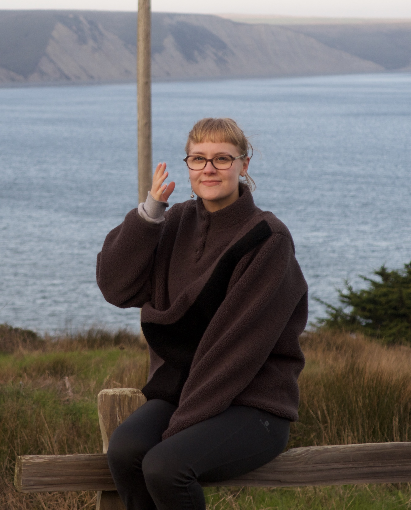

Ella Mattinen
Tampere University

ella.mattinen@tuni.fi
I am a third-year Economics PhD student at Tampere University. My research focuses on social insurance and taxation and their effects on individual and firm-level behavior. My research interest are public and labor economics.
My research is a part of the Finnish Centre of Excellence in Tax Systems Research (FIT).
I am visiting UC Berkeley in the academic year 2025–2026, hosted by Emmanuel Saez.